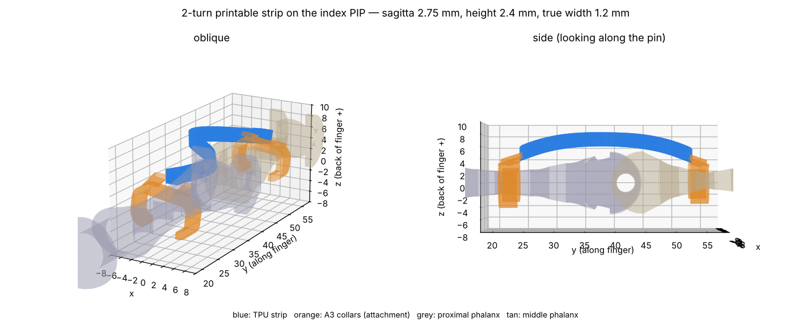
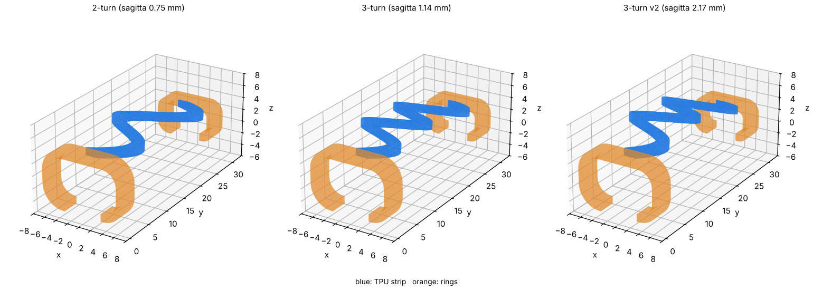
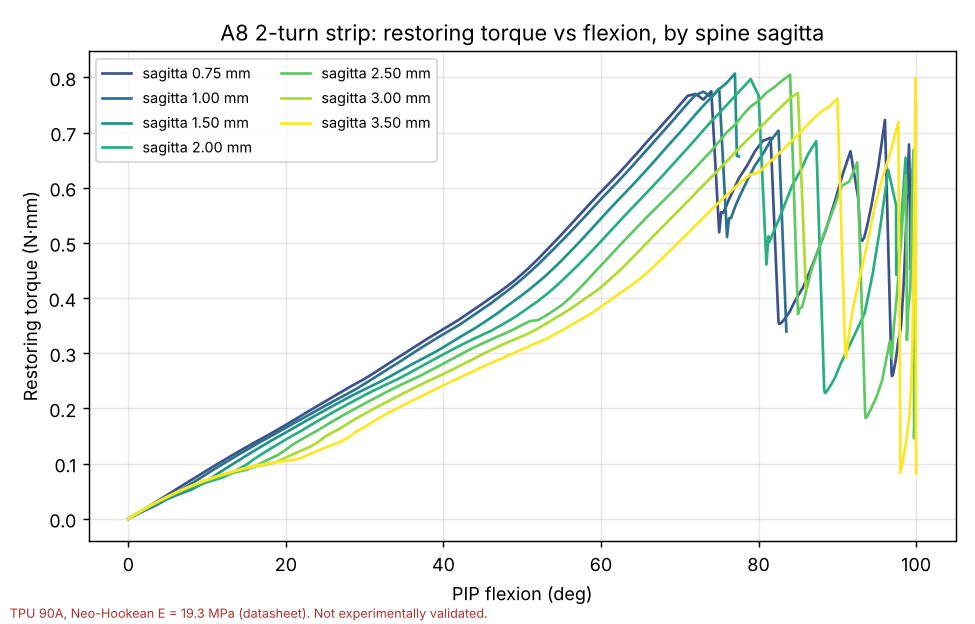
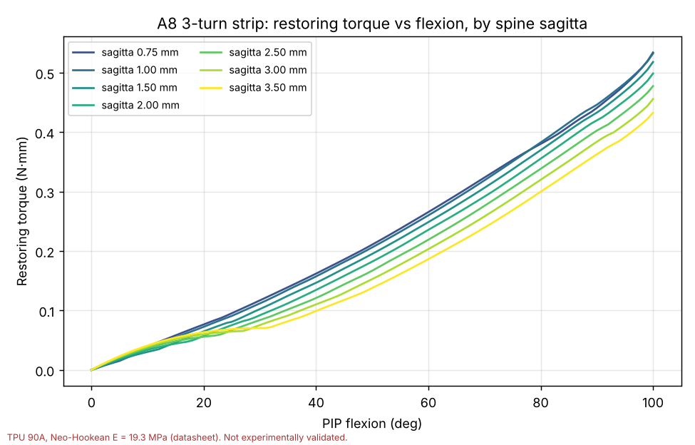
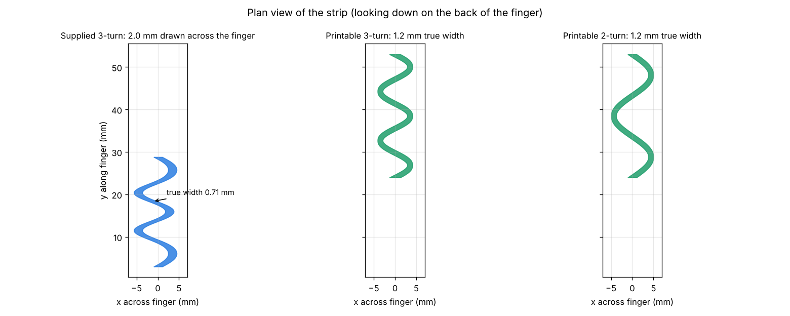
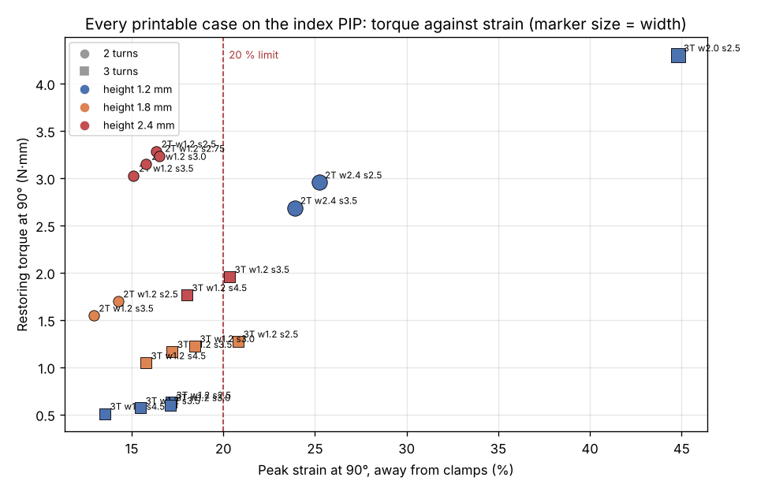
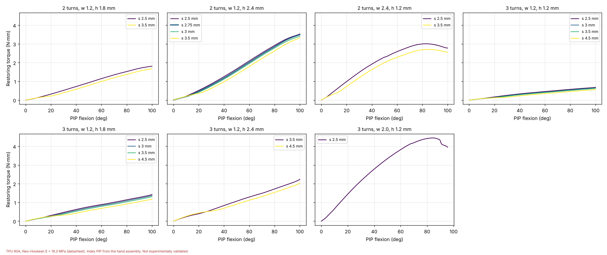
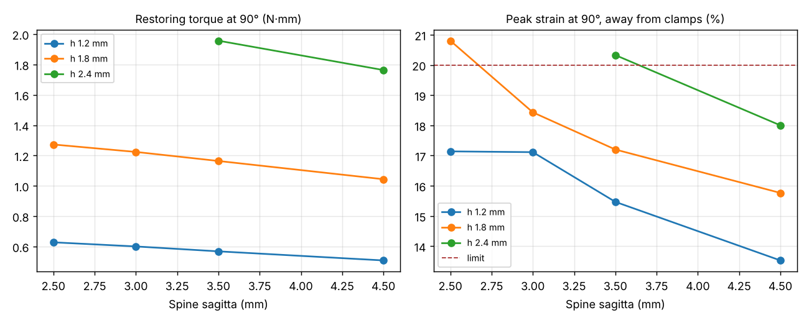

A spring-back strip across the index-finger PIP joint, analysed from your three A8 SolidWorks exports, then redesigned so it prints with a 0.4 mm nozzle and re-analysed on the real joint geometry from your A3 fit-check assembly.
Recommendation
Use 2 turns, with a 1.2 mm-wide, 2.4 mm-tall section drawn square to the path, on a spine arched 2.75 mm over the 29 mm span.
On the real index PIP it gives 3.24 N·mm of restoring torque at 90° flexion and rises smoothly all the way to 100°, with 16.5 % peak strain. That is about five times the 0.63 N·mm of a 3-turn strip at your current 1.2 mm height on the same joint. Every wall is at least 1.2 mm, three 0.4 mm lines. It clears the real phalanges by 0.39 mm at rest.
The assembly-frame file drops straight into Assem3_A3_0.8_PIP_FitCheck where the A3 strap sits. The part-frame file is in the Index_PP part's own coordinates, for mating. The strip ends are flat faces at the collar positions, so the collars are added in CAD as they are on the A3.
Best-fit spine curvature
R 39.6 mm
Sagitta 2.75 mm over a 29.0 mm chord. On this finger the best curvature is the flattest arch that still clears the joint: flatter gives more torque, and the real middle phalanx sets the limit. On the A8 test geometry, with your original section, the best fit was R 84.1 mm (sagitta 1.0 mm); that joint is smaller, so it needed less arch.
Turns
2 (3 lateral lobes)
True width
1.2 mm, constant
Height
2.4 mm
Lobe amplitude
4.4 mm (sine)
Span
y 24.0 → 53.0 mm
Torque at 90°
3.24 N·mm
Torque at 30° / 60°
0.81 / 2.02 N·mm
Peak strain at 90°
16.5 %
Volume
118.2 mm³ (≈ 0.14 g)

The recommended strip (blue) on the index PIP, with its ends at the A3 collar positions (orange). Proximal phalanx grey, middle phalanx tan. The side view shows the 2.75 mm arch over the pin.
What was asked, and how it was answered
The strip is a spring-back element. The finger flexes, the strip deforms, and its stored energy returns the joint to extension. You asked:
how your 2-turn and 3-turn A8 designs compare;
what happens with more turns;
which spine curvature is best for each, with matrices for each turn count;
for a printable version on the real joint, since no nozzle finer than 0.4 mm is available.
Every case was solved the same way. The strip's proximal end is held at its collar. The distal end is turned about the joint pin from 0° to 100° of flexion, with the finger modelled as rigid surfaces the strip can rest and slide on. The reaction moment at the pin is the restoring torque, recorded at every increment, so each case gives a full torque–angle curve rather than one number. Strain is the largest principal engineering strain, taken more than 1 mm from the tied ends.
Material: TPU 90A, Neo-Hookean, E = 19.3 MPa. That is the 2800 psi tensile modulus on Jabil's TPU 90A datasheet (ASTM D638). Polymaker PolyFlex TPU90's 100 % modulus implies about 12 MPa. Every torque scales close to linearly with E, so another filament rescales the numbers without reordering them.
In total about 50 nonlinear solves were run across the two studies, each from 0° to 100°.
Part 1 · Your three A8 designs
Measured from the STEP files, not the file names:
The section is drawn across the finger. Every cut across the finger is a 2.000 × 1.200 mm rectangle. The strip's true width is therefore 2.0·cos φ, where φ is the path's angle to the finger axis. Where the path crosses steeply, that is 0.92 mm on the 2-turn and 0.71 mm on the 3-turn, under two 0.4 mm extrusion lines.
The spine is a circular arc. It fits to 0.015 mm, with sagitta 0.75, 1.14 and 2.17 mm: bend radius 112, 74 and 40 mm.
Both 3-turn files share one plan path. They differ only in the spine.

The three supplied parts. Strip in blue, rings in orange.
A parametric model was built to reproduce them and to vary the turns and the curvature. It matches the exports to 0.03 mm in geometry and to 0.4 % (3-turn) and 1.3 % (3-turn v2) in torque at 90°. Turns (2, 3, 4) were then swept against spine sagitta (0 to 3.5 mm) on a finger inferred from the rings.

2 turns, original section: every variant snaps between 75° and 91° on the ring-inferred finger.

3 turns, original section: smooth to 100°. Curvature barely changes it.
Part 1 (A8 rings, original 2 mm section)
Torque at 90°
Strain at 90°
Behaviour
Best sagitta
2 turns
~0.8 N·mm before the snap
7–8 %
snaps 75–91°
none clean
3 turns
0.36–0.45 N·mm
7–8 %
smooth
1.0 mm (R 84.1 mm)
4 turns
0.13–0.16 N·mm
4–5 %
smooth, very weak
n/a
Part 1's conclusion was 3 turns at sagitta about 1.0 mm, close to your existing 3-turn file. It also found the spring far too weak, at under 0.5 N·mm, with the material barely strained. Its matrices are in results/a8_meander_study. Part 2 supersedes it for the build, because Part 1's finger was inferred from the A8 rings and its section cannot be printed.
Part 2 · The real index PIP, from the A3 fit-check
The A3 strap in Assem3_A3_0.8_PIP_FitCheck sits across the index finger PIP, between Index_PP and Index_MP. Measured in the proximal phalanx's own frame:
The joint is a 3.2 mm pin. It is 18 mm from the proximal collar and 11 mm from the distal one, not midway.
Over the joint the strip meets two cams of radius 5.195 mm. One is the proximal phalanx's clevis cheeks (|x| 3.0–5.36 mm), rounded about a line 2.69 mm behind the pin. The other is the middle phalanx tongue between them, rounded about a line 2.69 mm ahead of the pin, which turns with the middle phalanx. These are much taller than the 3.4 mm knuckle Part 1 had to assume.
The strip's ends are where the A3 strap leaves its collars: y = 24.0 and 53.0 mm, with the underside 3.70 and 3.35 mm above the bone axis.
The arch has a hard lower limit. To clear both cams by 0.25 mm, the spine needs a sagitta of at least about 2.5 mm, the same rise your A3 strap uses. Every design was also checked against the actual Index_PP and Index_MP solids. The real middle-phalanx base stands about 0.05 mm proud of its R 5.195 arc, which moves the limit to about 2.6 mm.
Part 3 · A section you can print
The strip is redrawn with its section square to the path at a constant true width. Near each end the section turns to face the collar, so the end caps stay flat for bonding. A 1.2 mm width is three 0.4 mm lines everywhere, against 0.71 mm at the narrowest point of the current 3-turn.
A constant true width exposed a defect the drawn-across section hid. Your 3-turn plan has a lobe tip of only 0.62 mm centreline radius, so a 1.2 mm strip's inner edge would fold over itself. The printable designs use clean sine paths at your files' own dominant amplitudes: 4.4 mm for 2 turns and 3.5 mm for 3 turns, which gives 3-turn tips of 0.97 mm radius.

Looking down on the back of the finger. The supplied 3-turn (left) pinches to 0.71 mm where it crosses; the printable strips (centre, right) are 1.2 mm everywhere.
What the real joint changes
2 turns no longer snaps. On the ring-inferred finger the 2-turn strip was pulled into a crease and lost up to 60 % of its torque. On the real joint the two R 5.2 cams carry it across, and every printable 2-turn case is smooth to 100°.
Strain, not stiffness, is the limit. The strip has to wrap cams of 5.2 mm radius, which by itself costs a bending strain of about h ÷ 2R: 11.5 % at 1.2 mm height. The original 1.2 mm section already reaches 17 % at 90°.
Height still pays, though less than beam theory said. Part 1 estimated torque would grow with the cube of height. Measured on the real joint, going from 1.2 to 1.8 mm roughly doubles torque, and strain rises only from 15.5 % to 17.2 % (3 turns, 3.5 mm sagitta). The strip is working mostly in tension around the cams, not in pure bending.
Width does not come free. 2.4 mm-wide 2-turn strips give 2.7–3.0 N·mm but reach 24–25 % strain, because their lobes bend in their own plane. A 2.0 mm-wide 3-turn reached 45 %. Width only helps where the lobes do not open.
2 turns beats 3 at every height. At 2.4 mm height and 3.5 mm sagitta: 2 turns gives 3.03 N·mm at 15.1 % strain, 3 turns 1.96 N·mm at 20.3 %. The shorter path carries more load for less strain.

Every printable case: torque at 90° against peak strain. Up and to the left is better; the dashed line is the 20 % limit. The 2-turn strips at 2.4 mm height (top left, inside the limit) are the strongest safe springs.

Torque against flexion for each printable group. The 2-turn, 2.4 mm-tall group (top row, second panel) rises smoothly to about 3.5 N·mm at 100°. The 2.4 mm-wide strips level off and ease after about 85°.
The matrices, printable section on the index PIP
Torque in N·mm, strain is the peak principal engineering strain away from the tied ends, clearance is to the real phalanx solids at rest. Feasible means: clears the real bones by ≥ 0.25 mm, no torque drop anywhere in 0–100°, and ≤ 20 % strain at 90°.
2 turns · w 1.2 mm
Height
Sagitta
Spine R
k₀ N·mm/rad
T30°
T60°
T90°
T100°
ε90°
Clearance
Top above axis
Verdict
2T
1.8
2.50
43.3
0.70
0.52
1.15
1.70
1.81
14.2 %
0.17
7.83
touches MP
2T
1.8
3.50
31.8
0.78
0.39
0.99
1.55
1.68
12.9 %
1.02
8.83
feasible
2T
2.4
2.50
43.3
1.11
0.87
2.10
3.28
3.54
16.3 %
0.17
8.43
touches MP
2T ★
2.4
2.75
39.6
1.14
0.81
2.02
3.24
3.50
16.5 %
0.39
8.68
selected
2T
2.4
3.00
36.5
1.17
0.75
1.95
3.15
3.42
15.8 %
0.60
8.93
feasible
2T
2.4
3.50
31.8
1.24
0.63
1.80
3.03
3.32
15.1 %
1.02
9.43
feasible
3 turns · w 1.2 mm
Height
Sagitta
Spine R
k₀ N·mm/rad
T30°
T60°
T90°
T100°
ε90°
Clearance
Top above axis
Verdict
3T
1.2
2.50
43.3
0.43
0.26
0.46
0.63
0.68
17.1 %
0.27
7.23
feasible
3T
1.2
3.00
36.5
0.45
0.23
0.43
0.60
0.66
17.1 %
0.69
7.73
feasible
3T
1.2
3.50
31.8
0.47
0.20
0.40
0.57
0.63
15.5 %
1.10
8.23
feasible
3T
1.2
4.50
25.6
0.50
0.16
0.35
0.51
0.56
13.5 %
1.16
9.23
feasible
3T
1.8
2.50
43.3
0.82
0.47
0.89
1.27
1.43
20.8 %
0.27
7.83
20.8 % strain
3T
1.8
3.00
36.5
0.87
0.42
0.84
1.22
1.37
18.4 %
0.68
8.33
feasible
3T
1.8
3.50
31.8
0.92
0.38
0.79
1.16
1.31
17.2 %
1.09
8.83
feasible
3T
1.8
4.50
25.6
1.00
0.32
0.69
1.04
1.18
15.8 %
1.16
9.83
feasible
3T
2.4
3.50
31.8
1.46
0.60
1.29
1.96
2.23
20.3 %
1.09
9.43
20.3 % strain
3T
2.4
4.50
25.6
1.61
0.54
1.12
1.76
2.03
18.0 %
1.16
10.4
feasible
Wide strips · h 1.2 mm
Width
Sagitta
T60°
T90°
ε90°
Clearance
Verdict
2T
2.4
2.50
2.59
2.96
25.3 %
0.14
strain, touches MP
2T
2.4
3.50
2.28
2.69
23.9 %
0.97
23.9 % strain
3T (amplitude 2.5)
2.0
2.50
3.82
4.30
44.8 %
0.27
44.8 % strain

3 turns: more height means more torque, and a higher arch lowers strain at the cost of torque. The 2-turn strip reaches more torque than any 3-turn option inside the limit.
Conclusion
Build the 2-turn printable strip: 1.2 mm true width, 2.4 mm height, 4.4 mm lobe amplitude, spine sagitta 2.75 mm (bend radius 39.6 mm), ends at the A3 collar positions. It gives 3.24 N·mm at 90° and 3.50 N·mm at 100°, rising smoothly the whole way, with 16.5 % peak strain and 0.39 mm clearance to the real bones. The file is linked at the top.
It is about five times stronger than a strip like your current one on this joint. Your 3-turn file cannot be used here as drawn: its 1.14 mm arch would sit inside the joint. A 3-turn strip at its 1.2 mm height, printable and arched to clear the joint, gives 0.63 N·mm. The gain comes from 2 turns (no snap on the real joint), a constant printable width, and double the height.
The curvature is set by clearance, not by a stiffness optimum. Flatter arches give more torque until the strip meets the middle phalanx base. 2.5 mm sagitta clears by only 0.17 mm and is rejected; 2.75 mm clears by 0.39 mm. If your prints come out proud or the collar sits high, step to 3.0 mm (R 36.5 mm). That gives 3 % less torque and 0.60 mm clearance.
Stay at 3 lines (1.2 mm) wide, and get torque from height. Wider strips bend in plane and run past the strain limit. Taller than 2.4 mm was not run. Extrapolating the 2-turn trend, strain would reach 20 % at roughly 3.5 mm height. That is not simulated, and the strip would then stand about 10 mm above the bone axis.
3 turns and 4 turns are the wrong direction for this joint. More turns make the path longer and the spring softer; 3 turns gives about two-thirds of the 2-turn torque, at more strain.
Watch the collar junction. At 90° the strain where the strip enters the collar reaches 26 %, against 16.5 % in the strip itself. Part of that is the model tying the end rigidly, which a real TPU collar is not. Still, it is where a print will crack first. Blend the strip into the collar with a 1–2 mm fillet or a short flare rather than a sharp step.
What is not yet known
The material. E = 19.3 MPa is one filament's datasheet. A tensile test of your printed TPU 90A would replace it and rescale every torque.
The torque the hand needs. These results rank and size springs. Whether 3.2 N·mm is enough depends on joint friction and the actuator, which have not been given.
Fatigue. The 20 % strain limit is engineering judgement for a TPU spring cycling many times, not a measured limit for this filament.
Validation. Nothing here has been measured on a bench. One printed strip on the finger with a torque gauge at 30°, 60° and 90° would check the whole chain.
Unsolved cases. A 1.6 mm-wide 2-turn was not solved: at 2.5 mm sagitta it touches the middle phalanx at rest. A 3.2 mm-wide 2-turn was stopped, because the 2.4 mm one was already over the strain limit.